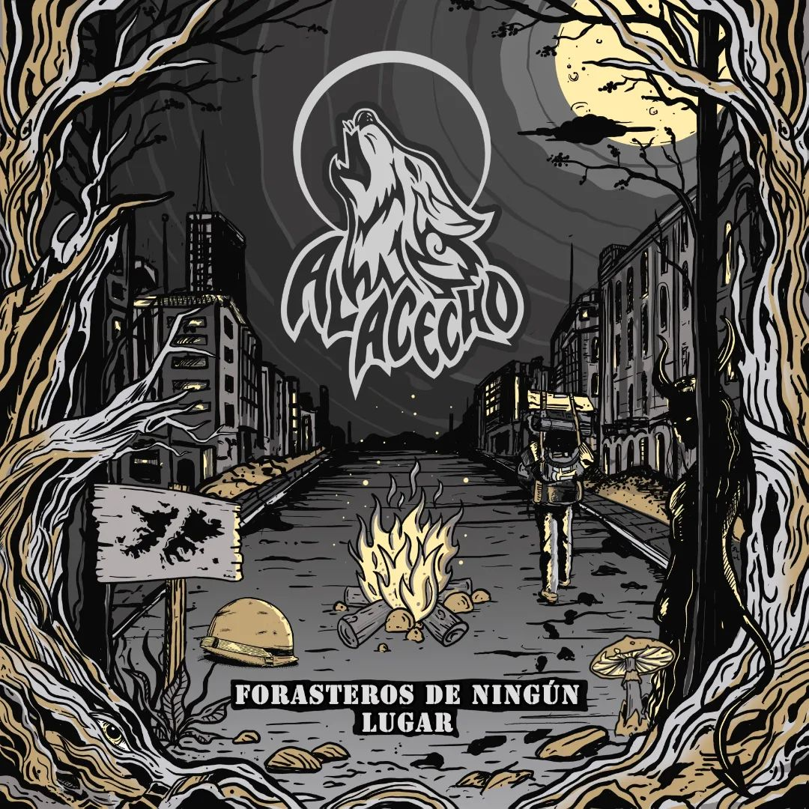

Discografia

¨Forasteros de ningun lugar¨
¨Forasteros de ningun lugar¨
El exodo de los buenos
¨Si ya conocemos el fin de este viaje.
Si en esa escollera las olas se apagan.
No habrá primaveras para enamorarse,
en la oscuridad que todo lo atrapa.
Y ves que el océano está tan picado
asusta nadar y sólo hacés la plancha.
Es hora de no dar todo por sentado:
seremos recuerdo, con suerte, mañana.
Qué más que quemar las naves de una buena vez.
Qué más que darlo todo para ser feliz.
Qué más que poner el hombro y mover los pies.
Qué más que soltar el lastre y saltar al fin.
La cosa se puede poner algo densa,
habrá quien te quiera sedar la esperanza.
Escucha la voz que por dentro te suena,
la del corazón, que nunca te falla.
Porque no quedan más toques de queda,
porque dejamos atrás nuestro miedo.
Porque ya fueron las tardes siniestras,
todo está servido, es nuestro momento.¨
El diablo hecho mujer
¨Salgo a contemplar, a ver qué es lo que pasa.
Salgo y doy sin más con el que menos tiene.
El que quedó afuera del renglón,
de esa opresión, espejo hoy es su rostro.
Este mundo voraz con tanta inequidad,
su tierra fértil no alimenta al débil.
Ese maltrato, esta desigualdad.
¿Acaso no son socios de esta sociedad?
Este plan que no distingue, este plan que no resiste,
¿Hasta cuándo se puede aguantar?
Tomar conciencia, correr la venda,
tomar conciencia, no más violencia.
Grandes novedades para ver muy bien
el humo del consumo mientras nos consume,
y cada uno sigue por su andarivel,
una cadena inmensa la que nos desune.
Este mundo voraz con tanta inequidad,
está quebrado, tambaleando de verdad.
Este maltrato, esta desigualdad
se está volviendo cada día más normal.
Tomar conciencia, correr la venda,
tomar conciencia, no más violencia.
Romper con este molde, frenar tanto galope,
poner el mismo norte, donde el sol no se esconde.¨
Caballo Cantor
¨ ¿Cuándo cerrará la historia?
¿Cuándo será el tiempo de salir de nuevo?
Ahora llegó el momento, a jugarse a pleno por el sentimiento.
Solamente con lo puesto, con el corazón abierto a lo que brota,
una sensación explota, que vuelen las horas donde sople el viento.
Es un ir y venir, es reír en una ronda loca.
Es el sol, el calor de una voz, es luz entre las sombras.
Una guitarra, una canción, algo que te emociona.
Si vos estás, todo es mejor.
Dale, que empiece la obra, vos serás la piedra para los cimientos,
vamos por una utopía que la melodía mueva hasta los muertos.
Somos mucho más que esto, somos energía en pleno movimiento,
vamos a bailar de nuevo a contarle al resto de qué estamos hechos.
Es un ir y venir, es reír en una ronda loca.
Es el sol, el calor de una voz, es luz entre las sombras.
Una guitarra, una canción, algo que te emociona.
Si vos estás, todo es mejor.¨
Noches de espanto
¨Cayó el diluvio y no había un arca adónde ir.
Quedamos tan desnudos en el preludio de abril.
Ni un manto de piedad para cobijarnos.
Ni una sola palabra entre tanto llanto.
Un atisbo de luz emergió entre las nubes,
era muy tarde para evitar el derrumbe.
No dejo de quererte, cuesta creerlo
solo pretendo avanzar en este momento
no dejo de quererte y vas a entenderlo
en un adiós hay amor, aunque no es un consuelo.
La tristeza se irá, así… Tal como llega.
Y cuando eso suceda echarás monedas
nuevamente en la vieja fuente.
Porque al final, todo es cuestión de suerte.
No dejo de quererte,
y cuesta creerlo
sólo pretendo avanzar en este momento
no dejo de quererte y vas a entenderlo
en un adiós hay amor, aunque no es un consuelo.
Serás la flor más linda creciendo en el prado.
espero entonces ser sólo un viento lejano.¨
Hijos del dolor
¨Encallado en la mentira, anda sumando billetes
va perdido en la neblina, siempre lejos de la gente.
Viendo al otro como ajeno, usando de sonajero
las monedas que el mendigo, pide bajo el aguacero.
Es la fiel analogía lo que flota en el retrete
salpicando las paredes, en su juego irreverente.
La felicidad en cuotas, incendiando la tarjeta
y con el upite a salvo, abierto para la fiesta.
Vamos todos que ya empieza la danza de los perdidos
a bailar con la más fea, a olvidarse del amigo.
Vamos todos que ya empieza, metele que son pasteles
a lustrar bien los pepes… milonga de lunes a viernes.
Cuando llegan los asados, en el quincho de su casa
oficiando de anfitrión contando qué mal la pasa.
Llorando por lo que tiene, y por lo que a otros regalan,
sobremesa de la queja porque eso no cuesta nada.
Y son tantos comensales los que piensan en lo mismo
que la estancia se hizo chica y hubo que sumar baldíos.
Acertijo indescifrable entender lo que les pasa,
y tan burda la falacia de tener las cuentas flacas.
Para que estén a sus anchas, es preciso que adelgacen
los que quedan en la puerta, los que nunca entran al baile.¨
Inconsciente
¨Del amor al odio dicen, que hay un solo paso (uno o dos pasos)
viviendo en extremos, ni existe el dolor.
Seguiremos como el río que se va abriendo camino
en un destino aún no escrito:
rugir en el mar, o secarse sin voz.
Por confundir, costumbre con sentimiento
será por eso que la estrella se apagó.
Nos vemos seguro, quizás… tal vez, nunca.
en la penumbra puede haber algo de sol
Las veredas nos encuentran muy diferentes y entre la gente
levantamos medianeras, encajamos el rencor.
Las bisagras se endurecen, cuesta abrir ahora las puertas
que ayer bailaban de tan ligeras.
Nos mudamos cada tanto, sin saber la dirección.
Por confundir, costumbre con sentimiento
será por eso que la estrella se apagó.
Nos vemos seguro, quizás… tal vez, nunca.
En la penumbra puede haber algo de sol
Llegará la noche donde la luna te anule el sueño
y en ese porfiado desvelo vendrán otras tantas
que has resuelto sepultar.
Verás que ese andar, sin ser el más estudiado,
era en verdad el más preciado legado:
la canción por inventar.¨
De ningun lugar
¨Agradezco tanto lo que me toca y esquiva.
Sueño corto tengo y larga es la esperanza mía.
El murmullo del vaivén de las hojas, otra vez.
Viento tenue el que me eleva sin valijas.
No son nubes de algodón las que tengo alrededor
el cansancio se ha cansado y ya dormita.
En tanta quietud como un gran alud
caen las esferas blancas con que antes veía.
¿Cómo es que fue? ¿Dónde pasó?
¿Qué sucedió? Yo no sé bien…
Sigo preguntándome y no habrá respuesta
voy tanteando en este vuelo vuelta a vuelta.
Encontrando luz, dejo atrás la cruz
en la incertidumbre vivo con la intriga.
¿Cómo es que fue? ¿Dónde pasó?
¿Qué sucedió? Yo no sé bien…¨
Singles
Noches de espanto
¨¿Cuántas preguntas debo contestarte Hasta que digas que sí?
¿Cuántos silencios esconde este invierno abrigando lo que no viví?
Sigo esperando atento de pronto verte llegar,
anestesiando al olvido, te siento venir.
Te hablo por que es domingo y de noche
todo me recuerda a vos.
Camino solo por este silencio que amarra a la soledad.
no me deja reír, no me deja llorar.
Aunque mis días se pasen en vano, el tiempo los devolverá,
te encontraré entre la ausencia, sin saber dónde buscar.
Aunque no escuches, te estoy hablando,
te sigo esperando, a vos...¨